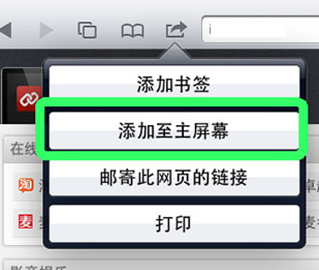
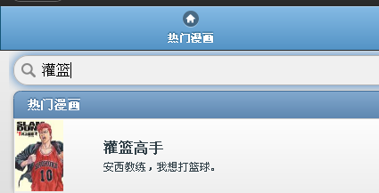

起因：
- 喜爱看漫画，但是无奈各大漫画站上的广告实在是太多了，木有办法只好自己搞一个了。
支持的平台：
- 基于HTML5平台，理论上支持所有的主流浏览器、各种Pad、iPhone、Android手机。
使用方法：
-
直接在浏览器上打开http://kukubird.sinaapp.com.，然后选择你中意的漫画就可以开始看了。(iOS系统)当然也可以添加到主屏幕上来快速启动，这样就可以全屏浏览了。（强烈建议！）

-
当然我们也是支持搜索的，在主页上有搜索框（请狂击键盘)

- 在你看漫画的时候如果觉得顶部的标题栏碍眼，可以轻击屏幕空白处就自动隐藏了
- 在平板上支持手指滑动操作，在PC上支持键盘左右键操作，总之是尽量做到操作简便。
- 如果你连动动手指都不愿意的话，我们也为你提供了自动翻页功能。
- 现在还存在着这样那样的问题，翻页的时候还是有比较大的延迟，我们会努力解决的。
微博：@库库鸟
blog comments powered by